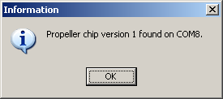

In order to download a Propeller Application to the Propeller chip, you first need to connect the it to your PC properly. Programming a Propeller chip is usually done through the USB connection on your development board, or through the use of the Propeller Plug device. In either case, a Windows VCP (Windows Virtual COM Port) driver is needed. This driver is included with the Propeller Tool software and is automatically installed for you unless you un-checked the option during installation.
If you have a Propeller Demo Board, it includes the Propeller chip and all the necessary circuitry.
If you do not have the Propeller Demo Board, we will assume that you have a similar development board or that you have already built the appropriate prototype circuit using an individual Propeller chip.
Provided you have made the connections suggested above, you should be able to identify the Propeller chip via the Propeller Tool software.
If the Propeller chip is powered and connected to the PC properly, you should see an Information dialog similar to this one, and are now ready to download applications to the Propeller chip.

The Information Dialog
The port (COM8) may be different on your computer.
Propeller Help Version 1.2
Copyright © Parallax Inc., dba Parallax Semiconductor
6/17/2011